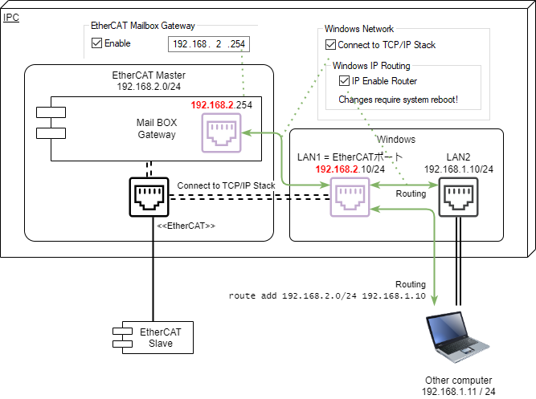

ETG.1510 Master Diagnosis Interface client library for Python
本パッケージは、EtherCATマスタから診断情報を収集するクライアントソフトウェアです。
Mailbox Gateway(ETG.8200)を経由し、UDP/IPによりEtherCATマスタのSDOエントリに格納された各種診断 情報（ETG.1510）を収集します。
EtherCATマスタが、全てのETG.1510のオブジェクトディクショナリ（OD）すべてをサポートしているとは限りません。また、ETG.1510 で規定されているVISIBLE_STRINGはサイズが固定ではなく、EtherCATマスタの仕様に依存します。
したがって、本ライブラリでは次のとおり二つの機能をサポートします。
SDO Information Service により、EtherCATマスタのオブジェクトディクショナリ情報を収集します。
収集したOD情報に基づき、SDO Uploadコマンドにより診断データを収集します。
インストール
$ pip install pyetg1510
接続準備
本クライアントを実行するコンピュータからEtherCATマスタが存在するコンピュータと別の場合、ネットワーク設定が必要です。例えばBeckhoff TwinCATでは、次図のとおりEtherCATマスタとWindowsで明確な境界があります。

このため、次のとおりOSのネットワーク設定を行う必要があります。
EtherCATマスタのあるコンピュータで実行する場合
Mailboxゲートウェイのホストアドレス（IPアドレス）を設定してください。図の例では192.168.2.254とします。
WindowsネットワークとMailboxゲートウェイを接続、および、IP Routingを有効にしてください。
Windowsのネットワーク設定で、EtherCATが占有しているネットワークカードに対するIPアドレスを設定します。図の例では
192.168.2.10/24とします。Windowsのネットワーク設定で、外部のLANと接続するネットワークカードに対するIPアドレスを設定します。図の例では
192.168.1.10/24とします。
EtherCATマスタを外部から接続したリモートコンピュータで実行する場合 (非推奨)
前節の項目の設定に加えて以下の対応が必要です。ただし、セキュリティ上問題がありますのでお勧めしません。
ファイアウォール設定でUDP/IP の Port 34980 のInboundを許可します
リモートコンピュータのIPアドレスを、EtherCATマスタのコンピュータと接続したネットワークと同じネットワークアドレスでIPアドレスを設定します。図の例では、
192.168.1.11/24とします。Windowsであれば管理者モードでターミナル軌道し、次のとおりrouteコマンドを入力します。Mainboxゲートウェイの192.168.2.254へ接続するには、192.168.1.10にルーティングしてもらうための設定です。
> route add 192.168.2.0/24 192.168.1.10
クイックスタート
from pyetg1510 import EtherCATMasterConnection, MasterODSpecification, ETG1510Profile
from dataclasses import fields
import asyncio
from pprint import pprint
async def get_etg1510_data(etg1510: ETG1510Profile):
"""インデックスを指定してSDOを取得する例"""
await etg1510.master_od.get_object_dictionary()
"""SDO Information serviceによりメインデバイスODデータを収集"""
whole_list = list(etg1510.sdo_database.keys())
"""マスターのODからインデックスリストを取得する"""
watch_list = list(filter(lambda x: 0xa000 <= x <= 0xafff, whole_list))
"""0xa000から0xafffまでのリストにフィルタリング"""
for index in watch_list:
sdo = await etg1510.get_sdo(index)
"""get_sdoメソッドでインデックスを指定してSdoDataBody型のSDOを取得する"""
pprint({hex(index): {f.name: getattr(sdo, f.name).value for f in fields(sdo)}})
async def get_etg1510_whole_data(etg1510: ETG1510Profile):
"""イテレータを用いて全てのSDOを順次取得する例"""
await etg1510.master_od.get_object_dictionary()
"""SDO Information serviceによりメインデバイスODデータを収集"""
async for entry, data in etg1510:
"""
非同期イテレータにより順次SDOインデックスとそのデータのタプルを順次取得してpprintで整形して標準出力
Returns:
entry(int): SDO インデックス
data(dataclass): complete accessで取得した全エントリをdataclassをコンテナとして取得。
dataclassのメンバはSdoEntry型として取得可能。
"""
pprint({hex(entry): {
f.name: getattr(data, f.name).value for f in fields(data)
}
}
)
if __name__ == '__main__':
connection = EtherCATMasterConnection('192.168.2.254', 34980)
"""UDP/IP通信インスタンス作成。Mailbox gatewayのIPアドレス, Portを指定"""
master_od = MasterODSpecification(connection=connection)
"""SDO Information servieのインスタンス作成"""
etg1510 = ETG1510Profile(master_od=master_od)
"""ETG.1510 の診断データイテレータ作成"""
asyncio.run(get_etg1510_data(etg1510))
"""非同期タスクによりETG.1510のSDOデータを収集"""
上記のプログラムを実行すると、以下のとおり標準出力されます。
$ python etg1510.py
{'0x1000': {'DeviceType': 0}}
{'0x1008': {'DeviceName': 'TwinCAT EtherCAT Master'}}
{'0x1009': {'HardwareVersion': '0'}}
{'0x100a': {'SoftwareVersion': '3.1 1737'}}
{'0x1018': {'NumberOfEntries': 4,
'ProductCode': 65539,
'RevisionNumber': 1737,
'SerialNumber': 0,
'VendorID': 2}}
{'0x8000': {'DeviceType': 0,
'DiagHistoryObjectSupported': False,
'FixedStationAddress': 1001,
'Flags': 0,
'LinkPreset': 17,
'LinkStatus': 0,
'MailboxInSize': 0,
'MailboxOutSize': 0,
'MailboxProtocolsSupported': 0,
'Name': 'Term 1 (EK1100)',
'NumberOfEntries': 37,
'PortPhysics': 0,
'ProductCode': 72100946,
'RevisionNumber': 1114112,
'SerialNumber': 0,
'Type': 'EK1100',
'VendorId': 2}}
{'0x8001': {'DeviceType': 0,
'DiagHistoryObjectSupported': False,
'FixedStationAddress': 1002,
'Flags': 0,
'LinkPreset': 17,
'LinkStatus': 0,
'MailboxInSize': 0,
'MailboxOutSize': 0,
'MailboxProtocolsSupported': 0,
'Name': 'Term 2 (EL1012)',
'NumberOfEntries': 37,
'PortPhysics': 0,
'ProductCode': 66334802,
'RevisionNumber': 1048576,
'SerialNumber': 0,
'Type': 'EL1012',
'VendorId': 2}}
:
:
{'0xa000': {'ALControl': 8,
'ALStatus': 8,
'ALStatusCode': 0,
'AbnormalStateChangeCounter': 0,
'CyclicWCErrorCounter': 0,
'DisableAutomaticLinkControl': False,
'FixedAddressConnPort': [0, 1002, 0, 0],
'FrameErrorCounterPort': [0, 0, 0, 0],
'LastProtocolError': 0,
'LinkConnStatus': 50,
'LinkControl': 240,
'NewDiagMessageAvailable': False,
'NumberOfEntries': 17,
'SlaveNotPresentCounter': 7}}
{'0xa001': {'ALControl': 8,
'ALStatus': 8,
'ALStatusCode': 0,
'AbnormalStateChangeCounter': 0,
'CyclicWCErrorCounter': 1,
'DisableAutomaticLinkControl': False,
'FixedAddressConnPort': [1001, 1003, 0, 0],
'FrameErrorCounterPort': [0, 0, 0, 0],
'LastProtocolError': 0,
'LinkConnStatus': 51,
'LinkControl': 240,
'NewDiagMessageAvailable': False,
'NumberOfEntries': 17,
'SlaveNotPresentCounter': 7}}
:
:
{'0xf002': {'NumberofEntries': 67,
'ScanCommandRequest': '\x04\x06',
'ScanCommandResponse': '',
'ScanCommandStatus': 0}}
{'0xf020': {'ConfiguredAddress': 1001, 'NumberofSlaves': 10}}
{'0xf120': {'ACyclicFramesPerSecond': 0,
'ACyclicLostFrames': 98826091,
'CyclicFramesPerSecond': 0,
'CyclicLostFrames': 66,
'MasterState': 0,
'NumberOfEntries': 2}}
{'0xf200': {'NumberOfEntries': 1, 'ResetDiagInfo': False}}